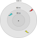

What are we trying to achieve?
- Automatic classification of bird species based on audio recordings
- Listen to birds
- Bird 1
- Bird 2
- Bird 3
Manual Point Count

Point Count Data
Automatic Point Count

Signal Classification
\[ X = \{(y_i, x_i)\}, i=1, \dots, N \]
\[ w = \arg\min_{w} \sum_{(y, x) \in X} loss(f(x), f_w(x)) \]
Feature Extraction
- Reduce the size of the input
- Trade-off between separability and contraction
\[ \text{if } \Phi(x) \neq \Phi(x') \text{ then } f(x) \neq f(x') \]
Feature Extraction
\[
\begin{aligned}
\text{if } & \Phi((x, y)) = x \text{ and } f((x, y)) = y \\
\text{ then } & \Phi((1, 3)) \neq \Phi(2, 3) \\
\text{ but } & f((1, 3)) = f((2, 3))
\end{aligned}
\]
Aim & Questions
- Aim: Improve upon the state-of-the-art
- Can deep residual neural networks learn to classify bird species based on audio recordings, and how well do they perform?
- Can multiple-width frequency-delta data augmentation be used to improve how well the model generalizes?
- Can meta-data fusion be used to improve the classification accuracy of the model?
Detect Structure
Separate Signal and Noise

Same Class Augmentation
Noise Augmentation

Feature Extraction
Logarithmic spectrogram
Deep residual neural networks
- Introduce shortcuts
- Allow training of very deep networks
Shortcut
\[ y = \mathcal{H}(x) = \mathcal{F}(x) + x \]
Multiple-width frequency-delta data augmentation
- Mel-frequency cepstral coefficients (MFCCs)
- Deltas of MFCCs
- Input: \[ (MFCCs, \Delta3, \Delta11, \Delta19) \]
Meta-data fusion
\[
Pr(bird_i|elevation, song) = \\
\frac{Pr(bird_j|song)Pr(elevation|bird_j)}
{\sum_{i=1}^n Pr(bird_i|song)Pr(elevation|bird_i)}
\]